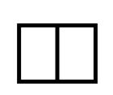
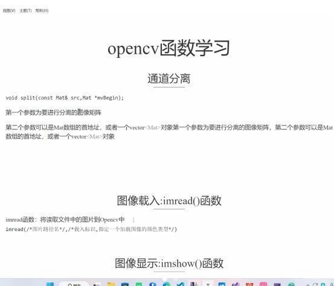
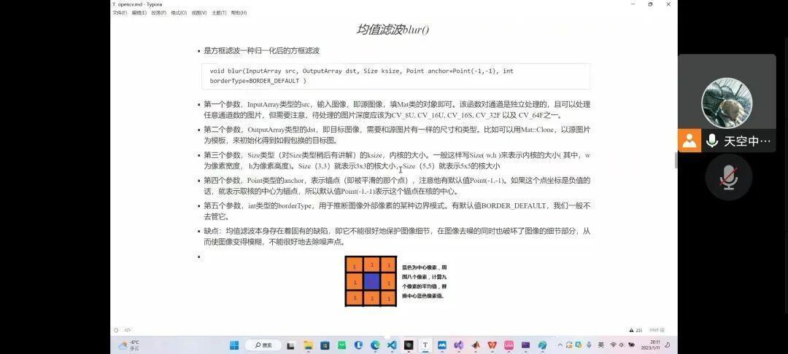
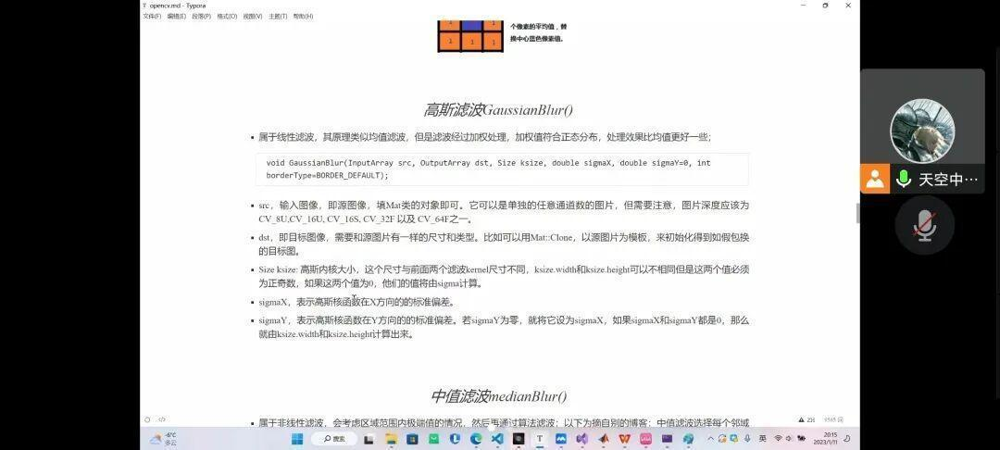
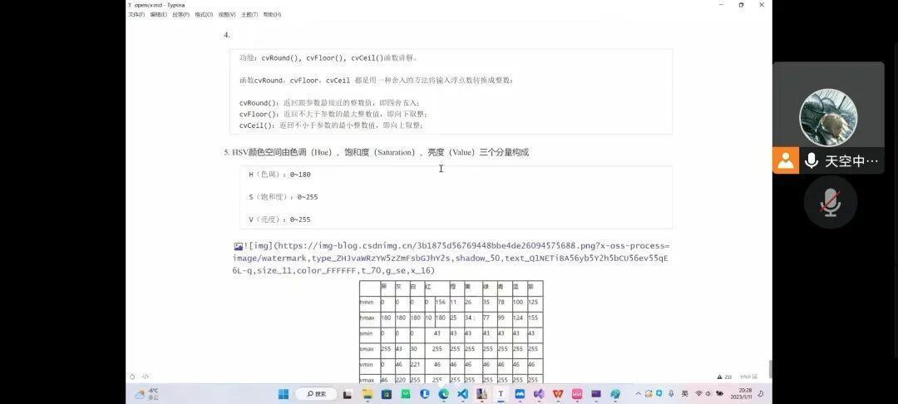
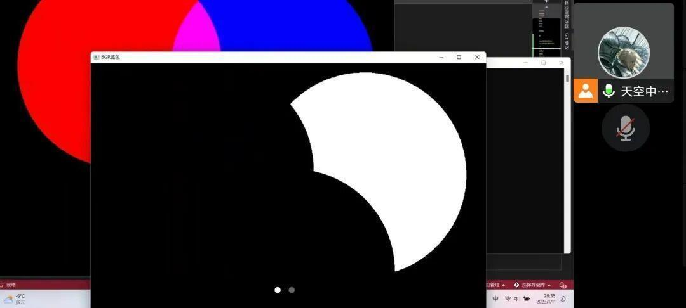

视觉组第四次教学
视觉组
第四次教学
沈理电协
经过前几次的教学后，大家对于Opencv的使用还有使用代码展示并且简单处理图片有了一定的了解，这次的教学是继续对图片及视频的处理教学。

教学内容
1.对于噪声的讲解与噪声各种分类的讲解。
2.对于图像滤波与滤波器的介绍和对噪声的处理。
3.对图像用颜色识别进行处理的方法。
教学内容展示
还是学长门为我们准备的课件和示例，清晰明了的教学风格呢。

对于这些函数的学习一直是重中之重，多次深刻的讲解也在为大家加深印象的同时巩固学习。
新的函数的展示与讲解既有新的内容，有需要之前的基础。
噪声在图像中的储存形式，还有因特性给噪声进行分类。在了解这些噪声的特点后，就是专项对这些噪声处理的讲解，明确的示例与代码可以让我们更清晰直观的理解。
对滤波器的介绍与如何使用处理噪音从而达到我们想要的效果。




首先对图像中的颜色数据进行了简单的分析，构建模型。
在大家有了对图像模型的了解后，对图像的颜色处理就会简单很多，还有学长的当场展示。
这次授课所教的知识以对图像总体分层，单独对噪声就为大家进行了简单的教学，从图像中还讲解了图像的色彩识别，这些都是举一反三的例子，让我们深入对图像的处理图像的方式进行学习。

排版|勒寒
文字|勒寒
图片|沈理电协
审核|红鲤